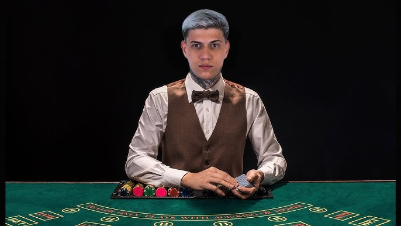

Yuri Brida, mais conhecido online como “Yuri22”, é um streamer e influenciador brasileiro que produz conteúdo de games, lives e entretenimento em plataformas como YouTube, Instagram e Kick. Ele ganhou bastante popularidade entre o público jovem com transmissões ao vivo e vídeos de humor/gameplay.
Yuri22 ficou conhecido principalmente por suas lives e transmissões de games. Ele começou a atrair atenção ao jogar e interagir com o público em tempo real, criando uma conexão divertida e espontânea com os espectadores, algo que é muito valorizado no mundo do streaming. Alguns pontos-chave que ajudaram na popularidade dele: Gameplay cativante – Yuri22 costuma jogar jogos populares entre jovens, mostrando habilidade e, ao mesmo tempo, mantendo um tom engraçado e descontraído. Interação com fãs – Ele responde comentários, faz desafios e brincadeiras durante as lives, o que cria uma comunidade leal. Humor e personalidade marcante – Ele se destacou por uma maneira única de se comunicar, com piadas, expressões e memes que viralizam nas redes sociais. Plataformas estratégicas – Além do YouTube, ele usa plataformas como Kick e Instagram, ampliando o alcance e a visibilidade do conteúdo.

Quem eram os amigos do Yuri22/tropa do gotiA Tropa do Goti é um grupo de criadores de conteúdo brasileiro que ficou conhecido por vídeos de humor, desafios e interações em redes sociais, especialmente TikTok e YouTube. Eles têm uma base de fãs jovem e são conhecidos por suas dinâmicas engraçadas em grupo.
Os integrantes da tropa do goti são: Ptchula, Muriloso, Murilhinho, tio Sam, Kubtiza, Shark e por ultimo o Dona ex integrante e ex melhor amigo do Yuri22
Yuri22 e Dona eram parceiros há anos. Dona em dezembro de 2024 recebeu uma proposta secreta de R$ 50 mil para participar de uma casa de aposta concorrente com a do Yuri22 e esconder a negociação do Yuri22. Quando a conversa vazou, surgiram acusações de traição, discussões em lives e uma divisão da comunidade entre os que achavam que ele apenas estava aproveitando uma oportunidade e os que consideravam a atitude uma quebra de confiança e contrato. Meses depois, ambos publicaram versões diferentes da história, aumentando ainda mais a polêmica.